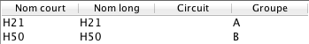

One Man Relay avec les groupes de circuits
Un One Man Relay est un format populaire où chaque coureur doit effectuer toutes les boucles de son circuit. Le départ est souvent donné en masse pour favoriser les contacts durant la course. A partir de la version 2.2, Geco dispose de fonctionnalités spéciales pour faciliter l’organisation de ce format de course.
Configurer un One Man Relay sous Geco
Prenons par exemple trois boucles A, B et C. En les combinant, il est possible de créer plusieurs circuits tous équivalents : ABC, ACB, BAC, BCA, CAB, CBA. Chaque coureur doit effectuer un seul de ces circuits pour être classé avec tous les autres. Geco doit donc connaître chacun de ces circuits (l’ordre spécifique d’enchaînement des postes) pour pouvoir vérifier les codes des puces suivant la variante parcourure.
Les logiciels de conception de circuit permettent généralement de créer toutes ces variations puis de les exporter au format XML. La configuration d’un One Man Relay sous Geco n’est donc guère différente d’un format plus classique :
- exporter les circuits au format XML depuis le logiciel de conception de circuit ;
- importer les circuits dans l’onglet configuration ;
- définir un horaire de départ en masse pour chaque circuit (si nécessaire) ;
- faire les inscriptions des concurrents.
Il n’y a aucune contrainte particulière sur l’inscription des coureurs. Vous pouvez assigner à chaque coureur une des variantes du circuit - dans ce cas il faut s’assurer que chaque coureur reçoive la bonne carte au départ. Ou vous pouvez attribuer le circuit Auto à tous les concurrents : de cette façon, Geco déterminera automatiquement la variante courue par le coureur lors de la lecture de puce (voir plus bas).
Utiliser les groupes de circuit pour exporter les résultats d’un One Man Relay
L’export des résultats pour un OMR est légèrement différente d’un export classique. En effet, générer des résultats par circuit est peu utile puisque cela revient à classer les coureurs par variante. Les catégories peuvent permettre de regrouper les concurrents de toutes les variantes. Cependant ce n’est pas toujours possible (par exemple, si on souhaite conserver les catégories d’âge, sans contrainte sur les circuits par catégorie).
A partir de la version 2.2, Geco introduit les groupes de circuit, qui réunissent plusieurs circuits et permettent de classer ensemble tous les coureurs appartenant au même groupe.

Les groupes de circuit sont à définir dans la configuration des circuits :
- vous pouvez lier chaque circuit à un unique groupe en donnant le nom du groupe dans la cellule dédiée du tableau ;
- si le groupe n’existe pas déjà, il sera créé sur le champ ;
- dans l’onglet résultats, sélectionnez Groupes de circuit au lieu de Circuits ou Catégories pour classer les coureurs, puis cliquez sur Actualiser pour afficher les résultats.

Organisation légère avec le process auto et les groupes de circuit
La détection de circuit au coeur du process auto permet l’organisation facile de courses et en particulier de One Man Relay. En effet, avec la détection automatique il n’est plus nécessaire d’affecter une variante à chaque coureur, ni de s’assurer que le coureur prend la bonne carte au départ. Il suffit de laisser Geco détecter le circuit à la lecture de la puce du concurrent.
Note : il faut alors que les concurrents soient fair-play et ne suivent pas aveuglément un autre concurrent, sans se soucier du circuit sur leur carte. Geco ne peut pas détecter les tricheurs en vérifiant les codes des postes !
Restreindre la détection de circuit avec les groupes de circuit
Dans certains cas, Geco doit être plus strict quand il s’agit d’affecter automatiquement un circuit à un concurrent. Si par exemple un coureur H21 part sur un long circuit mais abandonne rapidement, il y a un risque pour que Geco le place sur un circuit court (car il a peu de poinçons et en particulier moins de faux poinçons sur ce circuit court). Pour éviter cela, vous pouvez configurer Geco pour qu’un coureur d’une catégorie donnée ne puisse appartenir que à un groupe spécifique de circuits.
- Cocher l’option “Restreindre la détection du circuit…” dans la configuration de la lecture SI.
- Lier une catégorie à un groupe de circuit dans la configuration des catégories.
- Les groupes de circuit fonctionnent de la même façon dans la configuration des circuits et des catégories. Vous pouvez créer un groupe à la volée pour une catégorie, mais ce groupe sera vide jusqu’au moment où vous aurez associer des circuits avec ce groupe.

Dans notre example, on peut créer un groupe nommé A avec les circuits A1, A2, A3, et le lier aussi avec la catégorie H21. Lors de la lecture de puces, Geco détectera la meilleure variante entre les circuits A1, A2 et A3 pour un coureur H21 avec le circuit Auto. Mais il n’utilisera pas d’autres circuits.

Pour la détection automatique, les groupes de circuit liés aux catégories sont l’équivalent du circuit par défaut associé à une catégorie lors des inscriptions.